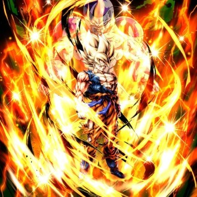
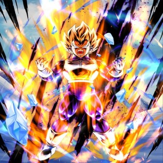
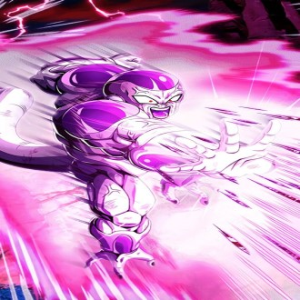
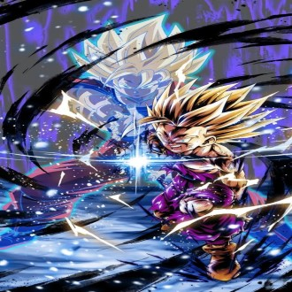
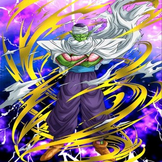
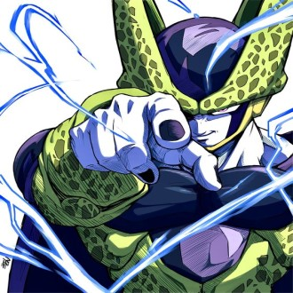
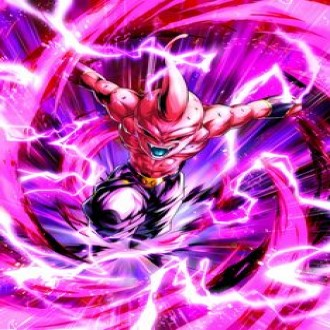
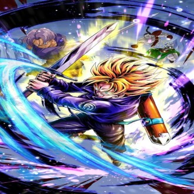

-

Goku
Descrição
Son Goku, cujo nome de nascimento é Kakarotto, é o protagonista da franquia Dragon Ball, criada por Akira Toriyama. Sua primeira aparição ocorreu no primeiro capítulo do mangá Dragon Ball, intitulado Bulma e Son Goku, publicado na revista Weekly Shōnen Jump em 3 de dezembro de 1984.
-

Vegeta
Descrição
Vegeta é um personagem fictício da franquia Dragon Ball criado por Akira Toriyama. As primeiras aparições de Vegeta na franquia foram no mangá Dragon Ball, publicado originalmente em 1988, e no quinto episódio do anime Dragon Ball Z, como o príncipe da raça praticamente extinta de guerreiros alienígenas, chamados Saiyajins.
-

Frieza
Descrição
Freeza é um personagem fictício da série de mangá Dragon Ball, criado por Akira Toriyama. Ele fez sua estréia no Capítulo # 247: Namekusei, Frio e Nublado, publicado pela primeira vez na revista Weekly Shōnen Jump em 6 de novembro de 1989, como um temido tirano alienígena conhecido como "o ser mais poderoso do universo".
-

Gohan
Descrição
Son Gohan, também conhecido apenas como Gohan, é um personagem fictício da franquia Dragon Ball criado por Akira Toriyama. Ele aparece na segunda parte do mangá, que corresponde ao anime Dragon Ball Z.
-

Piccolo
Descrição
Piccolo é um personagem fictício da franquia Dragon Ball, de Akira Toriyama. Piccolo faz sua primeira aparição como a reencarnação do vilão Piccolo Daimaoh no capítulo 167 do mangá, O problema no Tenkaichi Budokai publicado originalmente em 1988 na revista Weekly Shonen Jump, fazendo dele um demônio e rival do protagonista da série, Goku.
-

Cell
Descrição
Cell é um personagem fictício da série em anime e mangá Dragon Ball Z, criado por Akira Toriyama, da qual é o vilão principal da terceira saga, conhecida como a Saga Cell ou Saga dos Androides. Cell é um Bio-androide criado a partir das células de diversos lutadores como dos Guerreiros Z, Freeza e Rei Cold.
-

Majin Boo
Descrição
Majin Boo, é um personagem e antagonista final do mangá Dragon Ball e sua adaptação em anime Dragon Ball Z. Ele é introduzido no capítulo # 460 Majin Boo Aparece?! publicado pela primeira vez na revista Weekly Shōnen Jump em 14 de março de 1994.
-

Trunks
Descrição
Trunks é um personagem fictício da franquia Dragon Ball criado por Akira Toriyama. Ele aparece no mangá Dragon Ball, publicado originalmente em 1989.